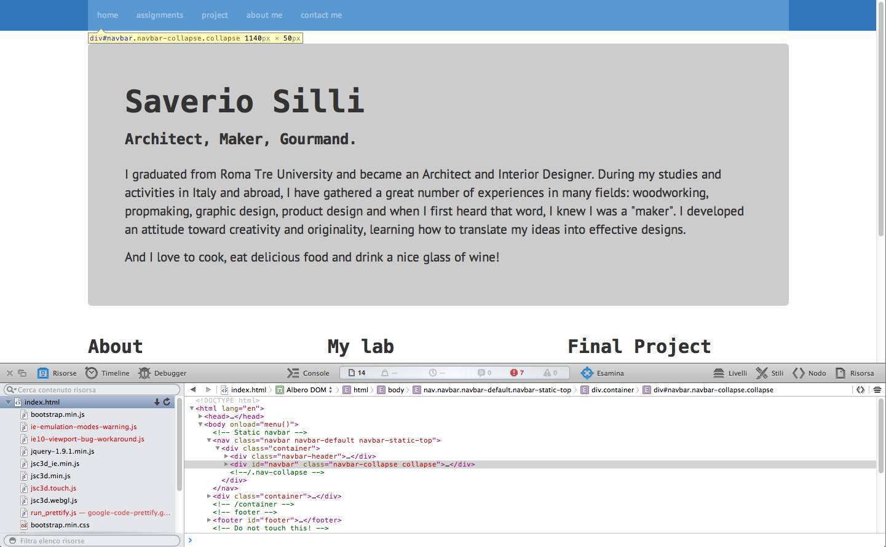
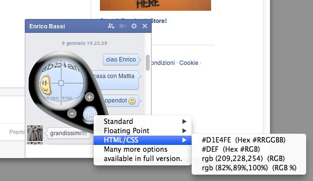

I already had some basic notions about html and css, but designing the website from scratch would have been to difficult and time consuming, so I started from Massimo Menichinelli's Fab Academy Template. It is built on Bootstrap and I used it to make some modifications to the template.
First I downloaded a very powerful editor called Brackets and I used it to compile the website. One thing I did to edit the template was to change the color of the navbar and the footer.
Since I didn't know exactly which class I had to modify in the main css file, I first opened the index.html page on Safari, where I had installed the developer tools (similar tools are available for Firefox); when you move your mouse cursor over the page with the developer tools active, Safari enlight on another window the corespondent line in the html file.

This way I could see that in order to change the navbar background color I had to add the following code to the template's specific css:
.navbar {
background-color: #37b
}
.navbar-default .navbar-nav>li>a {
color: #fff
}
.navbar-default .btn-link:hover, .navbar-default .btn-link:focus {
color: #000
}
Another way to find the right place where you need to write your modifications is to use a simple search: all you have to do is to use a keyword in an intelligent way. For example, as I said, I wanted to modify the background color in the navbar, so after I found the right lines in the .html file using Safari developer tools I had to find the correspondant lines in the .css file. I clicked cmd+F (on a Mac) but instead of using "navbar" as a keyword for the search I used #333 (the color code correspondent to the one I wanted to modified). I got some ten results and I was able to find the ones belonging to the navbar and modify it
A very helpful instrument when dealing with color codes is a little freeware application for Mac called HueGo Lite.

You can use it to find the number or code of the color of any pixel on your screen, so if you like a specific color, like, say, the blue from the chat ballons in facebook, you can put HueGo visor on top of a chat window already open on you screen and click "go" to have all the info about that color, not only webcolor code, but also RGB, CMYK, Pantone etc.
Other edit I made were changing the font family to a Monospace family, adding a Google Fonts collection and modifying the weight and size of the h1, h2, h3 classes.
At first I had some problems making the menu work with multiple selection, so at the beginning I disabled the functionality and opted for a single choice menu with static pages with a list of links. After that our Instructor warned us that the template he designed had the javascript for the multiple choiche menu disabled when you were not connected to the internet, but you could see it working when connected and using Firefox as a browser; so I followed his instruction and see that the menu was working well and put it back on my site because it really is a good feature, especially thinking at the next months when there will be many more pages on the website.